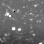

Some of the sky moves too slowly to see.
SPHEREx photographs the same patch every few months. Flip through those visits and a nearby star drifts by about one pixel. That is the whole signal, and it is smaller than the noise around it.
So this tool does two things. It shows you the visits, and it tells you how faint an object the data could still have shown you there. A thing you cannot see is not the same as a thing that is not there.
Start with an object
Five objects, measured
Each row is a real measurement from this repository: how many visits the patch has, how far the object moves across them, and how large a change in brightness the series would have resolved.